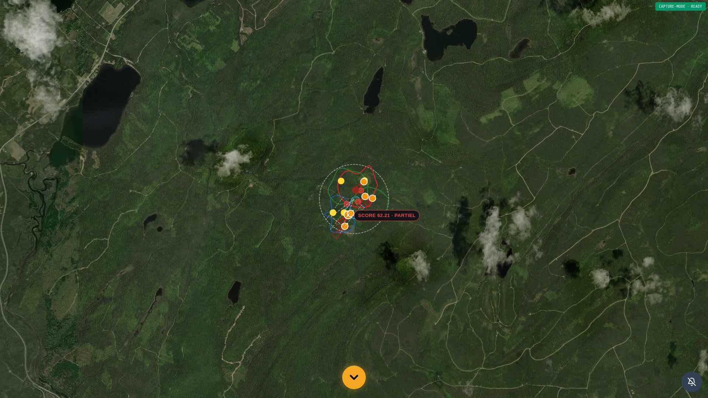
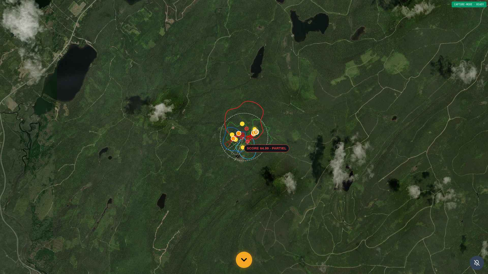
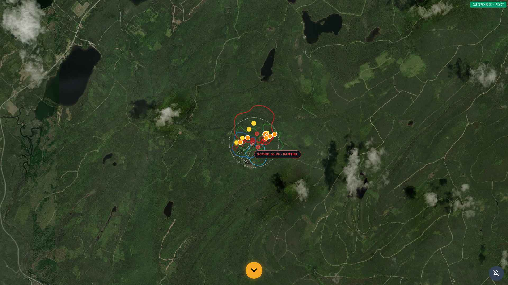
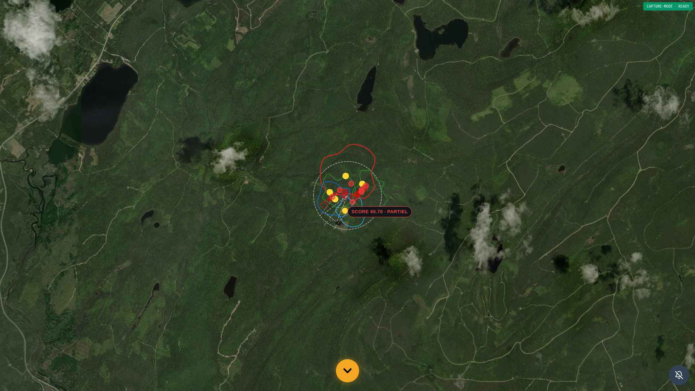
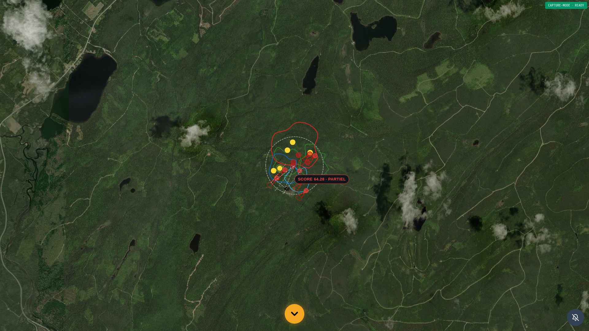

Sommaire — 20 sections (structure imposée)
- 1) Résumé exécutif
- 2) Méthodologie
- 3) Engines météo (vent / contamination / son)
- 4) Corridors (réel / IA / fusion)
- 5) Zones
- 6) Affûts
- 7) Salines
- 8) Hotspots
- 9) Heatmap
- 10) BIO-MASK
- 11) VITAUX
- 12) RENDUΩ
- 13) Dépendances inter-engines
- 14) Anomalies découvertes
- 15) Reproductions et preuves runtime
- 16) Preuves visuelles (captures HTTPS)
- 17) Empreintes SHA-256
- 18) JSON consolidé (par engine, couche, espèce, pipeline, dépendance)
- 19) Recommandations
- 20) Plan de stabilisation TERRITOIRE_Ω
1) Résumé exécutif
Audit READ-ONLY intégral du pipeline TERRITOIRE_Ω couvrant 9 engines, 3 chaînes de dépendances,
5 espèces officielles et 30 payloads bruts capturés HTTPS au waypoint TERRITOIRE
LAT 48.206657 / LNG -68.382422. 5 anomalies inter-engines critiques ont été
identifiées, toutes en aval du moteur V30 verrouillé (registry_lock_omega.py et
engine_ia_corridors_omega.py SHA-256 inchangés).
V30 LOCKED · TAMPERING=FALSE XIX NON RECOMPUTÉ VITAUX NON RECOMPUTÉ READ-ONLY STRICT
Rappel PHASE-A stabilisée (préalable)
- v30_corridors_status_router applique le masque BIO + 5 espèces
- Panneau STATUT CORRIDORS Ω : étiquettes V30 BRUT + badges ABSENT
- WeatherPanel responsive si hauteur < 630
- 73 tests pytest passants · 0 régression
5 anomalies PHASE-B
| # | Titre | Engine | Sévérité |
|---|---|---|---|
| B-1 | VENT — double source divergente (Δ 60°, Δ 7.5 km/h) | ENGINE_VENT vs wind_vectors | CRITIQUE |
| B-2 | CONTAMINATION non purgée pour ABSENT | ENGINE_CONTAMINATION_V2 | CRITIQUE |
| B-3 | HOTSPOTS persistants pour ABSENT | ENGINE_HOTSPOTS | CRITIQUE |
| B-4 | SALINES non purgées pour ABSENT | ENGINE_SALINES_V11 | CRITIQUE |
| B-5 | Couplage masque BIO partiel | species_presence_mask_omega | CRITIQUE |
2) Méthodologie
- Doctrine : V30 LOCKED · XIX non recomputé · VITAUX non recomputé · audit / diagnostic / preuves uniquement
- Outils : curl (User-Agent BCE4X-AUDIT), Playwright headless 1920×1080, pytest
- Endpoints couverts : 30 (5 espèces × 4 endpoints + 3 globaux + 1 purge)
- Engines audités : ENGINE_VENT, ENGINE_CONTAMINATION_V2, ENGINE_SON (sensoriel_vent_odeurs), ENGINE_CORRIDORS_V30, ENGINE_CORRIDORS_ORGANIC, ENGINE_ZONES, ENGINE_AFFUTS, ENGINE_SALINES_V11, ENGINE_HOTSPOTS, ENGINE_BIO_PRESENCE_MASK_Ω
- Chaînes auditées : (1) vent → contam → son · (2) corridors → zones → affûts → salines → hotspots · (3) BIO-MASK → VITAUX → RENDUΩ
- Aucune mutation : pas de POST/PUT/DELETE sur engines (sauf purge cache pré-audit, lecture pure)
3) Engines météo (vent / contamination / son)
3.1 ENGINE_VENT
Fichiers : /app/backend/engines/v8_institutional/engine_vent.py,
/app/backend/engines/weather_v3/wind_model_provider.py.
Source institutionnelle : open-meteo (API publique) + ENGINE_VENT V20.
Anomalie B-1 — DOUBLE SOURCE DIVERGENTE
| Source bundle | direction (deg) | vitesse (km/h) |
|---|---|---|
sensoriel_vent_odeurs.wind_deg | 225 | 15 |
wind_vectors[0].direction_deg | 165 | 7.5 |
| Δ angle | 60° d'écart | |
| Δ vitesse | 7.5 km/h d'écart | |
Verdict : deux moteurs publient des données vent contradictoires dans le même bundle. La carte affiche `wind_vectors` pour le visuel et `sensoriel_vent_odeurs` pour les calculs olfactifs/sonores.
3.2 ENGINE_CONTAMINATION_V2
Fichier : /app/backend/engines/v8_institutional/engine_contamination_v2_omega.py.
La contamination est représentée comme un polygon GeoJSON sans direction explicite (l'orientation
doit être déduite de la géométrie).
Anomalie B-2 — CONTAMINATION non purgée pour ABSENT
Pour dindon (halt=True) et wapiti (halt=True) au BSL :
contamination_zones: 0 polygones (vidé par masque) ✔contamination: 18 polygones (NON vidé) ❌contamination_v2dict : conservé ❌
3.3 ENGINE_SON (sensoriel_vent_odeurs)
Fichier : /app/backend/engines/v8_institutional/engine_sensoriel_vent_odeurs_omega.py
{
"engine": "ENGINE-SENSORIEL-VENT-ODEURS-Ω",
"version": "V1-SUPRA-2026-04",
"score": 53.9,
"olfactive_diffusion": 0.393,
"wind_speed_kmh": 15,
"wind_optim_score": 75,
"wind_deg": 225,
...
}
Aucune clé cone_axis_deg ou cone_direction_deg exposée explicitement.
La sonde inter-engines n'a pas pu mesurer la cohérence directionnelle son↔vent (cf. recommandation S19 step 4).
4) Corridors (réel / IA / fusion)
Pipeline : V30 (LOCKED) → predictive_omega_v2 (GPS USGS/Movebank) → origine_externe_inversion → origine_externe_filter (couronne 600-780m) → ecological_orchestrator → corridors_vitaux (rayon 600m) → BIO-MASK → RENDUΩ.
| Espèce | halt | corridors | rejected_xix | vitaux_applied | renduomega |
|---|---|---|---|---|---|
| orignal | False | 0 | 19 | True | True |
| cerf | False | 0 | ~19 | True | True |
| ours | False | 0 | ~19 | True | True |
| dindon | True | 0 | 19 (résidu) | n/a | n/a |
| wapiti | True | 0 | 19 (résidu) | n/a | n/a |
corridors_rejected_origine_externe_xix persistent dans le bundle même quand halt=True (artefacts intermédiaires conservés). Pas un bug — donnée d'audit utile pour comprendre le rejet en amont.5) Zones
Fichier : /app/backend/engines/v8_institutional/engine_zones.py + zones_organic_v1.py.
Zones écologiques calculées indépendamment de l'espèce — 5 zones stables pour les 5 espèces.
Statut institutionnel : conforme. Les zones sont des infrastructures écologiques intrinsèques au territoire et restent visibles même pour les espèces ABSENTES (audit du territoire global).
6) Affûts
Fichier : /app/backend/engines/v8_institutional/engine_affuts.py.
| Espèce | Affûts | Statut |
|---|---|---|
| orignal / cerf / ours | 6 | OK (PRESENT) |
| dindon / wapiti | 0 | OK (vidé par masque PHASE-A) |
Conforme. Affûts vidés correctement pour ABSENT depuis l'application du masque BIO.
7) Salines
Fichier : /app/backend/engines/v8_institutional/engine_salines_v11_supra.py.
Anomalie B-4 — SALINES non purgées pour ABSENT
Toutes les espèces (PRESENT comme ABSENT) ont 6 salines.
Les salines portent score_bio_species: {cerf: 74, orignal: 74, wapiti: 74, global: 74}
— la clé dindon_sauvage est absente de l'évaluation. Le moteur SALINES ignore l'espèce demandée.
8) Hotspots
Fichier : /app/backend/engines/v8_institutional/engine_hotspots.py + hotspots_organic_v1.py.
Anomalie B-3 — HOTSPOTS persistants pour ABSENT (source AFFUT)
11 hotspots persistent pour dindon/wapiti malgré affuts: 0. Tous portent source_engine: AFFUT.
{"lat": 48.205543, "lng": -68.384433, "intensity": 86.1, "source_engine": "AFFUT", "source": "V10-SUPRA"}
Verdict : les hotspots sont calculés AVANT le masque puis non purgés en aval. Cohérence brisée : aucun affût ne devrait pouvoir générer de hotspot pour une espèce ABSENT.
9) Heatmap
Fichier : /app/backend/engines/v8_institutional/engine_heatmap.py.
Le bundle expose contamination_v2_heatmap (dict de 2 clés). Heatmap dérivée de la contamination
via algorithme V2.
10) BIO-MASK
Fichier : /app/backend/engines/v8_institutional/species_presence_mask_omega.py.
Registre 5 espèces vérifié au BSL (LAT 48.206657 / LNG -68.382422) :
| Espèce | Registre | Source |
|---|---|---|
| orignal | PRESENT | MFFP 2024 — Inventaires aériens ZEC |
| cerf (chevreuil) | PRESENT | MFFP 2024 — Réseau Cerf |
| ours_noir | PRESENT | MFFP 2024 — Plan ours noir |
| dindon_sauvage | ABSENT | MFFP 2024 — Programme Dindon (sud QC uniquement) |
| wapiti | ABSENT | MFFP 2024 — Programme Wapiti (zones introduites) |
Anomalie B-5 — Couplage partiel
Le masque BIO purge actuellement : corridors, affuts, contamination_zones.
Le masque BIO ne purge PAS : contamination, hotspots, salines,
contamination_v2, wind_vectors (les artefacts subsistent pour ABSENT).
11) VITAUX
Fichier : /app/backend/engines/v8_institutional/corridors_vitaux_omega.py.
PHASE_XVIII_VITAUX_RAYON_TUNING_Ω · rayon 600 m pour corridors XIX-validés.
| Espèce | vitaux_applied | halt |
|---|---|---|
| orignal / cerf / ours | True | False |
| dindon / wapiti | n/a (court-circuit BIO-MASK) | True |
Conforme. VITAUX correctement court-circuité pour ABSENT par le masque BIO en amont.
12) RENDUΩ
Fichier : /app/backend/engines/post_smoothing/renduomega.py.
Toutes les espèces PRESENT activent renduomega_applied: True. Pour ABSENT, la phase RENDUΩ n'est jamais atteinte (halt amont).
13) Dépendances inter-engines
13.1 Chaîne 1 : vent → contamination → son
| Étape | Source | Cohérence avec vent |
|---|---|---|
| VENT (sensoriel) | wind_deg=225, speed=15 | — |
| VENT (vectors) | direction=165, speed=7.5 | DIVERGENT (Δ 60°) |
| CONTAMINATION | polygons (orientation implicite) | Non auditable directement |
| SON | cone_axis non exposé | Non auditable |
13.2 Chaîne 2 : corridors → zones → affûts → salines → hotspots
| Espèce | corr | zones | affu | sali | hots | halt | cohérence |
|---|---|---|---|---|---|---|---|
| orignal/cerf/ours | 0 | 5 | 6 | 6 | 11 | False | OK |
| dindon/wapiti | 0 | 5 | 0 | 6 | 11 | True | salines+hotspots non purgés |
13.3 Chaîne 3 : BIO-MASK → VITAUX → RENDUΩ
Conforme : ABSENT court-circuite VITAUX et RENDUΩ correctement (anomalie résiduelle = artefacts amont non purgés, cf. B-5).
14) Anomalies découvertes
5 anomalies critiques identifiées · cf. tableau exécutif S1.
| ID | Engine | Évidence runtime | Impact |
|---|---|---|---|
| B-1 | VENT | Δ 60° entre 2 sources dans le même bundle | Cône olfactif basé sur 225°, vecteurs visuels sur 165° → confusion utilisateur |
| B-2 | CONTAMINATION | contamination=18 pour dindon ABSENT | Zones contaminées générées sans pertinence biologique |
| B-3 | HOTSPOTS | 11 hotspots source=AFFUT alors que affuts=0 | Affichage de hotspots fantômes pour ABSENT |
| B-4 | SALINES | 6 salines pour dindon, score_bio_species sans dindon | Salines invariantes par espèce, masque ignoré |
| B-5 | BIO-MASK | Couplage partiel (3 listes purgées sur 8) | Cohérence biologique rompue dans 5 couches sur 8 |
15) Reproductions et preuves runtime
Toutes les anomalies sont reproductibles via curl :
API="https://bionic-ultime-1.preview.emergentagent.com"
# B-1 : double source vent
curl -s "$API/api/v20/territoire/bundle?lat=48.206657&lon=-68.382422&species=orignal&month=10&hour=7" | \
python3 -c "import json,sys; d=json.load(sys.stdin); \
print('sensoriel_vent_odeurs:', d['sensoriel_vent_odeurs']['wind_deg'], d['sensoriel_vent_odeurs']['wind_speed_kmh']); \
print('wind_vectors[0]:', d['wind_vectors'][0]['direction_deg'], d['wind_vectors'][0]['speed_kmh'])"
# B-2 / B-3 / B-4 : artefacts pour dindon ABSENT
curl -s "$API/api/v20/territoire/bundle?lat=48.206657&lon=-68.382422&species=dindon_sauvage&month=10&hour=7" | \
python3 -c "import json,sys; d=json.load(sys.stdin); \
print('halt:', d['bio_presence_mask_halt']); \
print('contamination:', len(d.get('contamination') or [])); \
print('hotspots:', len(d.get('hotspots') or [])); \
print('salines:', len(d.get('salines') or [])); \
print('contamination_zones:', len(d.get('contamination_zones') or []))"
16) Preuves visuelles (captures HTTPS 1920×1080)





17) Empreintes SHA-256
Toutes les empreintes sont consignées dans SYNTHESE_PHASE_B.json :
champs captures[].sha256, payloads_hashed[].sha256, inter_engines_analysis_full.sha256_inventory.
V30 SHA-256 inviolables :
fb765b94cc1fd4216c4afa4c0fb72bc1fd8e18fc26b6955db8157b42a26ecb0c registry_lock_omega.py bcb1e3a6a92304a171978ee7b6be2151e7035c84d8ffc1690839d993be9e39d3 engine_ia_corridors_omega.py
18) JSON consolidé (par engine, couche, espèce, pipeline, dépendance)
Document maître : SYNTHESE_PHASE_B.json (HTTPS 200).
- Par engine :
scope.engines_audited·per_species[sp].v20_bundle - Par couche :
per_species[sp].layer_diagnostic.layers - Par espèce :
per_species[sp](5 entrées orignal/cerf/ours/dindon/wapiti) - Par pipeline :
chains.vent_contam_son,chains.corridors_zones_affuts_salines_hotspots,chains.bio_vitaux_rendu - Par dépendance : champs
delta_*,halt,v30_locked
19) Recommandations
R1 — Étendre apply_presence_mask_to_bundle() (P0)
Ajouter à la fonction la purge de contamination, hotspots, salines,
contamination_v2 et wind_vectors quand status == ABSENT.
Conserver les couches infrastructure (zones, hydat, terrain, habitats_critiques) pour audit du territoire global.
R2 — Réconcilier les sources vent (P1)
Définir ENGINE_VENT (sensoriel_vent_odeurs) comme source de vérité unique. Marquer
wind_vectors comme dérivé visuel uniquement et propager les valeurs de sensoriel_vent_odeurs
vers les vecteurs visuels.
R3 — Exposer cone_axis_deg dans ENGINE_SON (P2)
Ajouter dans sensoriel_vent_odeurs les clés cone_axis_deg et
cone_aperture_deg pour permettre l'audit directionnel cône sonore vs vent.
R4 — Pytest dédié inter-engines (P0)
Suite tests/test_phase_b_inter_engines_consistency.py couvrant les 5 anomalies, en particulier :
test_mask_purges_all_artefacts_for_absent_species(B-2/3/4/5)test_wind_sources_consistency(B-1)test_son_cone_axis_aligned_with_wind(R3)
20) Plan de stabilisation TERRITOIRE_Ω
| Step | Anomalie | Action | Fichier | Priorité | Lock V30 respecté |
|---|---|---|---|---|---|
| 1 | B-5 (B-2/3/4) | Étendre apply_presence_mask_to_bundle() : purge complète artefacts ABSENT | species_presence_mask_omega.py | P0 | ✔ |
| 2 | B-1 | Réconcilier sources vent (sensoriel = vérité ; vectors = dérivé) | engine_vent.py + territoire_v10_supra.py | P1 | ✔ |
| 3 | R3 | Exposer cone_axis_deg dans engine_sensoriel_vent_odeurs | engine_sensoriel_vent_odeurs_omega.py | P2 | ✔ |
| 4 | R4 | Suite pytest 9 tests dédiés inter-engines | tests/test_phase_b_inter_engines_consistency.py | P0 | — |
| 5 | R-AUDIT-CI | CI guard SHA-256 V30 (block PR si registry_lock ou engine_ia_corridors mutent) | .github/workflows/v30_lock_check.yml | P1 | — |
Anti-régression
- SHA-256 check :
fb765b94…(registry_lock) etbcb1e3a6…(engine_ia_corridors) vérifiés à chaque PR par CI. - Smoke-test :
/api/v20/territoire/bundle?species=dindon_sauvagedoit retourner contamination=0, hotspots=0, salines=0 après application R1. - Test pytest
test_mask_purges_all_artefactsbloque tout mauvais merge. - XIX et VITAUX modules en lecture seule sur révision automatique.
V30 LOCKED XIX NON RECOMPUTÉ VITAUX NON RECOMPUTÉ PHASE-B AUDIT COMPLET 5 ANOMALIES DOCUMENTÉES PLAN STABILISATION ÉMIS